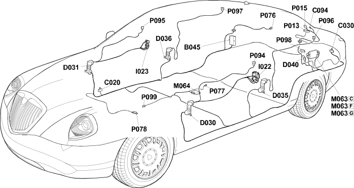

E7018 PASSIVE ENTRY CONTROL UNIT LOCATION COMPONENTS
- Path
- Electrical equipment > ELECTRICAL FUNCTIONS > E70 VEHICLE ELECTRONIC SYSTEMS > E7018 PASSIVE ENTRY > E7018 PASSIVE ENTRY CONTROL UNIT LOCATION COMPONENTS
- Kind
- topic
- Applies to
- all engines; all production periods
- Interactive page
- https://sloeber94.github.io/elrnDB-lThss/en/#/841005532
Applies to: all engines; all production periods
Location Components

Components
Component code | Name | Assembly reference |
|---|---|---|
Luggage compartment junction unit (CVB) | 5505A | |
- | ||
Centre dashboard earth | - | |
Left rear earth | - | |
Right rear earth | - | |
Passive entry aerial earth | - | |
Left front door coupling | - | |
- | ||
Left rear door coupling | - | |
- | ||
Rear/boot coupling | - | |
7005C | ||
Switch on passenger side exterior handle | 7005C | |
Luggage compartment control unit (NVB) | - | |
Passive entry control unit (NPE) | 5580E | |
Boot aerial | - | |
Passive entry control unit RF aerial (NPE) | - | |
5580E | ||
RF aerial on tunnel for passive entry (NPE) | 5580E | |
RF aerial in dashboard for passive entry (NPE) | - | |
RF aerial on left front door for passive entry (NPE) | 5580E | |
RF aerial on right front door for passive entry (NPE) | 5580E | |
RF aerial on left rear door for passive entry (NPE) | 5580E | |
RF aerial on right rear door for passive entry (NPE) | 5580E | |
RF aerial on rear bumper for passive entry (NPE) | - | |
RF aerial for Fiat code passive entry (NPE) | - |
Topics linked from this page (26)
- B045 Luggage compartment junction unit (CVB)
- C020 Passenger dashboard earth
- C022 Centre dashboard earth
- C030 Left rear earth
- C031 Right rear earth
- C094 Passive entry aerial earth
- D030 Left front door coupling
- D031 Right front door coupling
- D035 Left rear door coupling
- D036 Right rear door coupling
- D040 Rear/boot coupling
- I022 Switch on driver's exterior handle
- I023 Switch on passenger side exterior handle
- M063 Luggage compartment control unit (NVB)
- M064 Passive entry control unit (NPE)
- P013 Boot aerial
- P015 Passive entry control unit RF aerial (NPE)
- P076 RF aerial on rear parcel shelf for passive entry (NPE)
- P077 RF aerial on tunnel for passive entry (NPE)
- P078 RF aerial in dashboard for passive entry (NPE)
- P094 RF aerial on left front door for passive entry (NPE)
- P095 RF aerial on right front door for passive entry (NPE)
- P096 RF aerial on left rear door for passive entry (NPE)
- P097 RF aerial on right rear door for passive entry (NPE)
- P098 RF aerial on rear bumper for passive entry (NPE)
- P099 RF aerial for Fiat code passive entry (NPE)